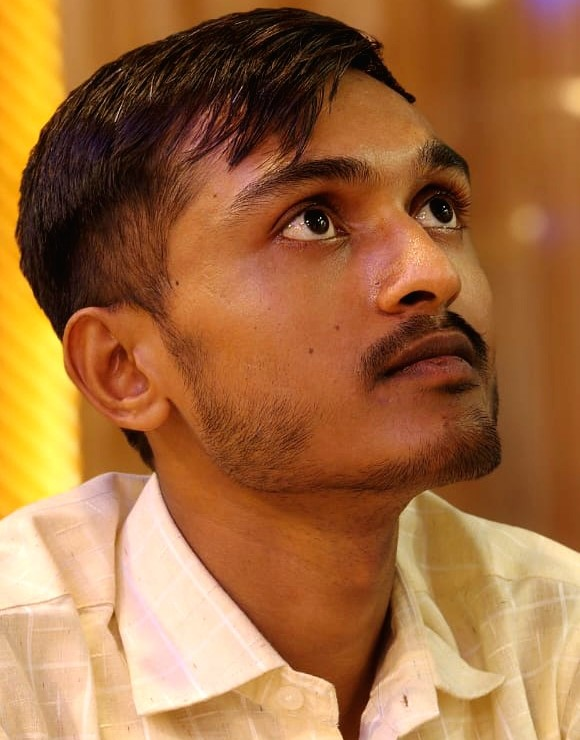
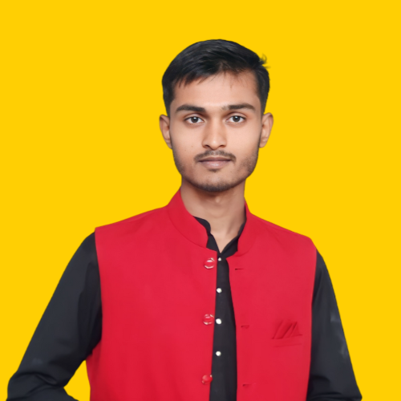

About Myself
My name is Abdul Rahman Ali, and I am currently pursuing a Bachelor of
Technology (B.Tech) in Computer Science Engineering. I consider myself a
curious learner, someone who enjoys exploring new ideas, understanding how
things work, and finding ways to solve real-world problems using
technology. Academic Interests Being a computer science student, I have
developed a strong interest in programming, problem-solving, and
application development. I like working on projects that have a practical
impact, such as building apps that help students or communities. For
example, I have been working on ideas like a college event management app
to simplify event registrations, and a room and flat-finding app for
students and low-income groups, which would include agreements, details,
and easy access to affordable housing. Projects like these excite me
because they combine technology with human needs. Apart from computer
science, I also take an interest in subjects like mathematics, chemistry,
and engineering graphics, as I believe these areas broaden my thinking and
problem-solving skills. Even though some subjects may not seem directly
connected to computer science, I like to explore how they play a role in
shaping an engineer’s mindset. Personal Interests Beyond academics, I am
deeply interested in history, psychology, and motivational books. History
teaches me about the struggles and achievements of civilizations,
psychology helps me understand human behavior and thought processes, and
motivational books inspire me to push beyond limitations and think
positively in every situation. I also enjoy learning about industrial
growth and rural development. Since I live in a village that already has
good infrastructure like roads, electricity, and transportation, I often
think about how small businesses and manufacturing units could create jobs
and empower local communities. For instance, I have explored ideas such as
making incense sticks (agarbatti), candles, diyas, and other small-scale
manufacturing businesses that could help people, especially my mother,
start an independent livelihood. Values and Personality I believe in
continuous growth — whether it is through formal education, practical
projects, or personal experiences. I value hard work, creativity, and the
willingness to learn from mistakes. I also strongly believe in helping
others and contributing to society in meaningful ways. For me, technology
is not just about machines or codes; it is about solving problems and
improving lives. I am also someone who adapts to challenges. For example,
even when I face difficulties in academics, such as limited guidance in
certain subjects, I make efforts to learn independently, practice
regularly, and improve my skills. This self-motivated attitude helps me
stay focused on my long-term goals. Future Goals In the future, I want to
establish myself as a professional who can combine innovation with social
impact. My dream is not only to build a successful career in technology
but also to create solutions that make education, housing, and livelihood
opportunities accessible to more people. I aspire to contribute to the
vision of a “Viksit Bharat” (Developed India) by participating in projects
that focus on industrial growth, digital innovation, and rural
development. ✨ In short, I see myself as a learner, a dreamer, and a doer
who wants to use knowledge and creativity to bring positive changes in
society.

1. Skills & Strengths
List out your strong points in simple words:
Problem-solving and logical thinking
Basic programming skills (you can mention Python, C, or whichever you’re learning)
Creativity in coming up with ideas (like apps or business plans)
Good communication and curiosity to learn
2. Achievements
Even small things matter! For example:
Certificates from platforms like Infosys Springboard, online coding challenges, or any hackathons you joined.
School/college competitions (debates, quiz, sports, cultural activities).
Your YouTube channel project SmartBatch (MCQ learning for Class 12 students).
3. Hobbies & Activities
Helps to show your personality beyond studies:
Reading motivational and psychology books.
Exploring business ideas for rural areas.
Creating educational content.
Travelling or visiting historical places (since you like history).
4. Philosophy / Life Motto
A personal line makes it memorable. Example:
“I believe technology should not just make life easier, but also create opportunities for people who need them the most.”
“I always try to learn, improve, and contribute something positive wherever I go.”